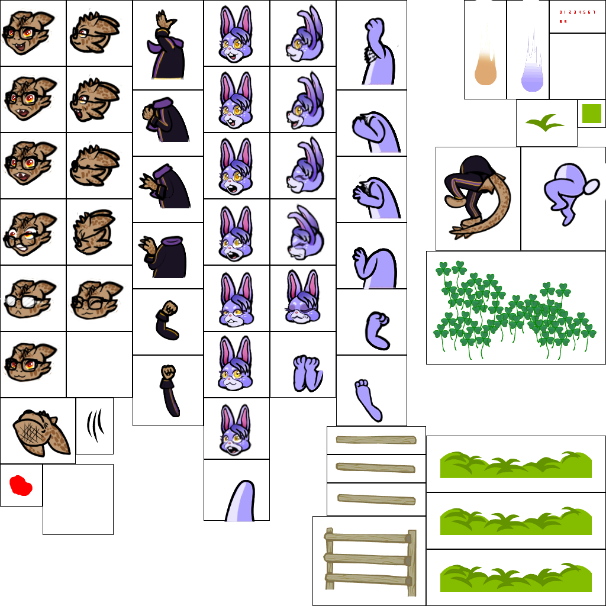
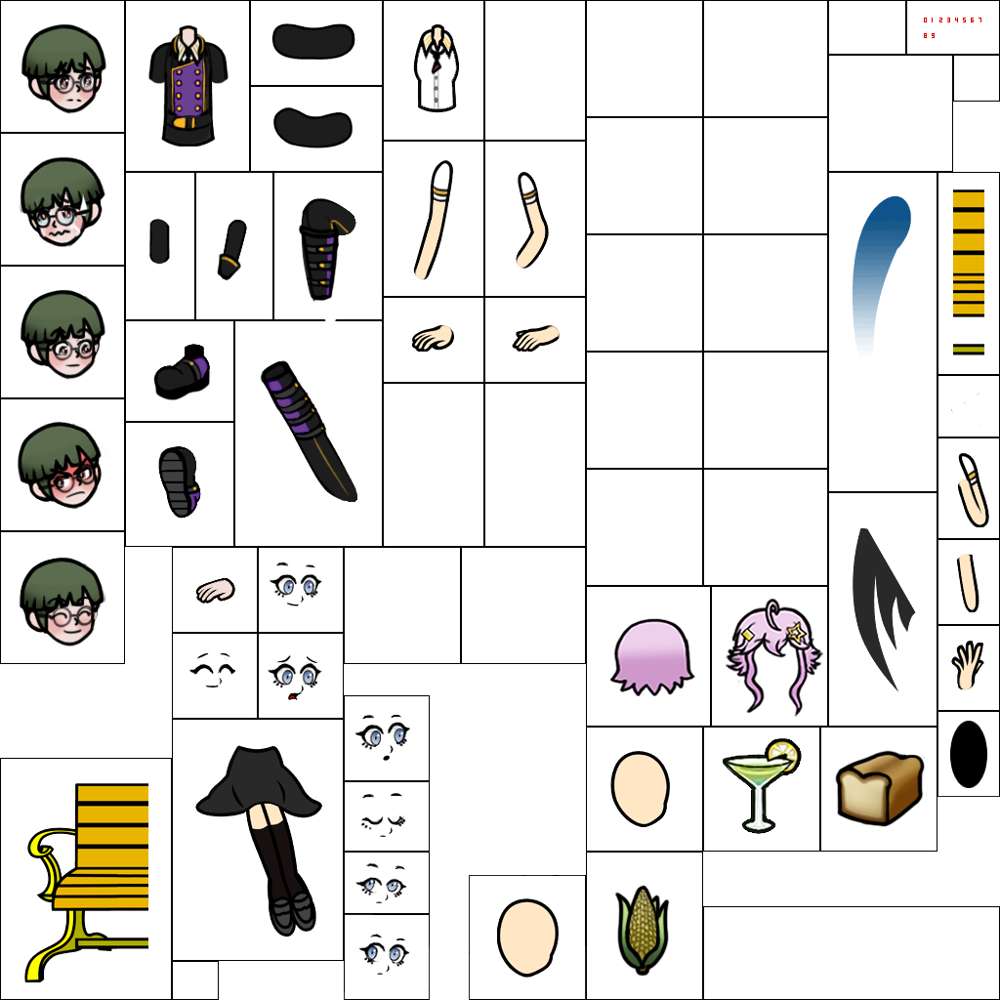
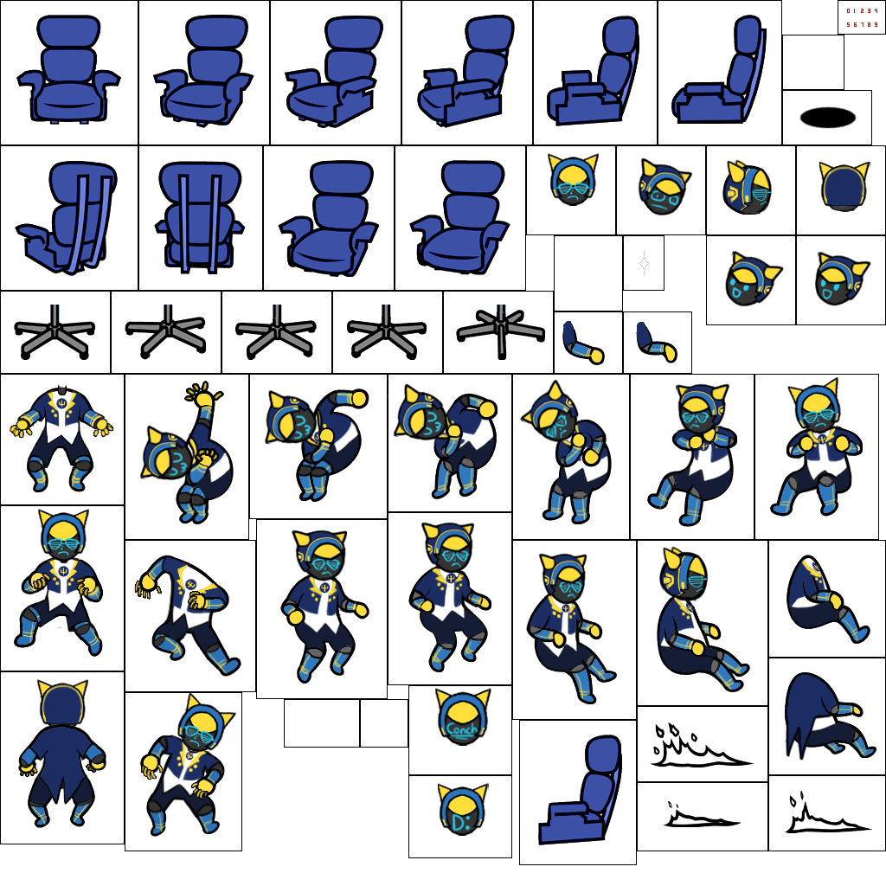
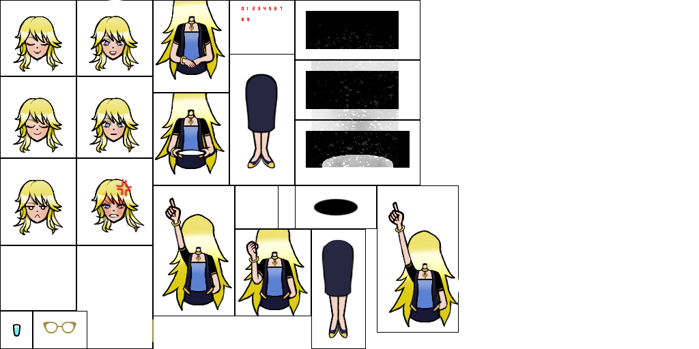

In this project, I learned how to manage file directory systems for my own benefit to upload my own files into a prexisting game. I did this by first extracting the original sprite sheets, then editing them with different characters, then replacing them in the original load folder.
The characters shown here are from a collaborative storybuilding community based in a VR video game with the permission of the original creators. I made this as a passion project towards that community, and learned some game design and more Photoshop skills along the way. In a project long ago, I tasked myself to create a new Pokemon game with a brand new cast of creatures and so I am very acclimated to applying very strict formats to sprite sheets and adapting my character designs to them, as well as handling the general technical aspects of implementing texture packs into games.
The second edited minigame starts at 1 minute, 48 seconds.



